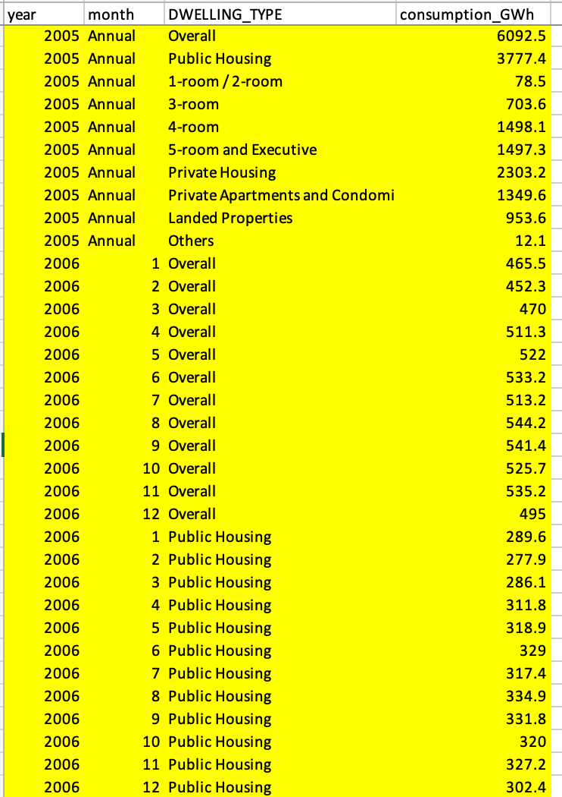
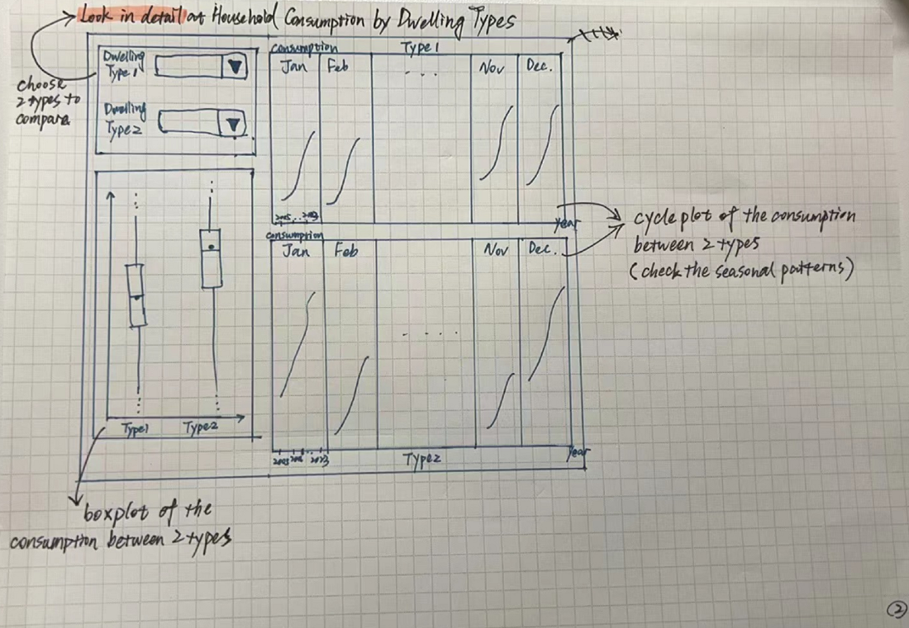
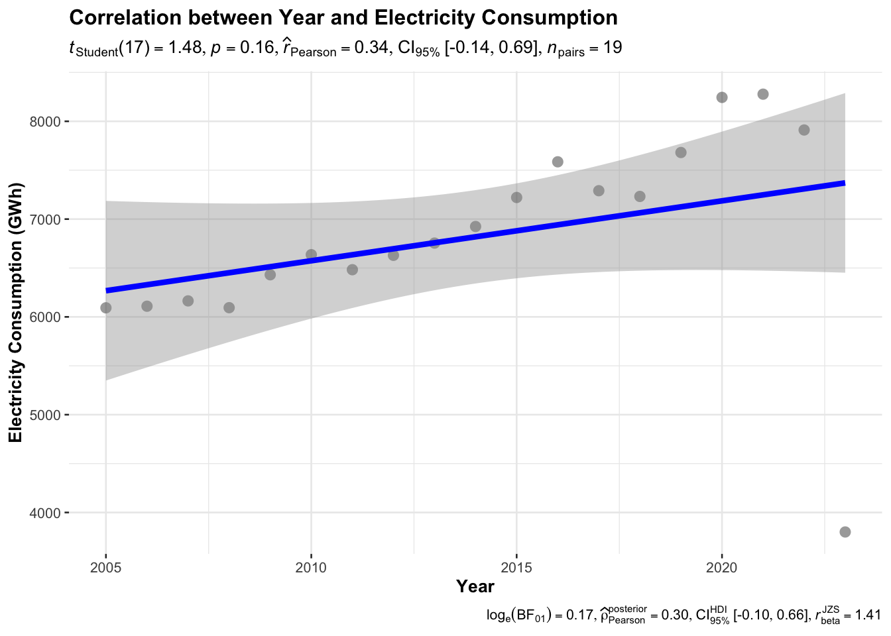
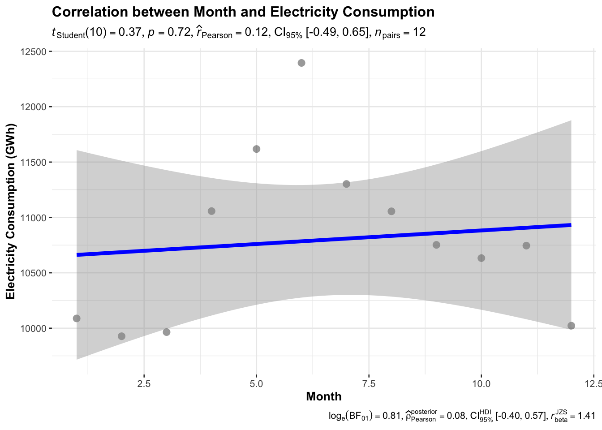
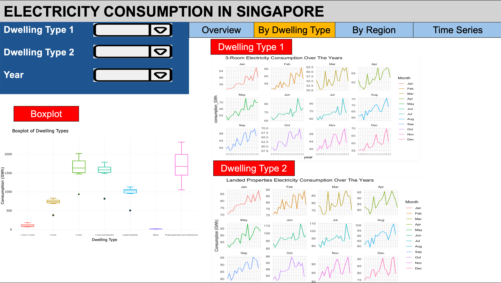
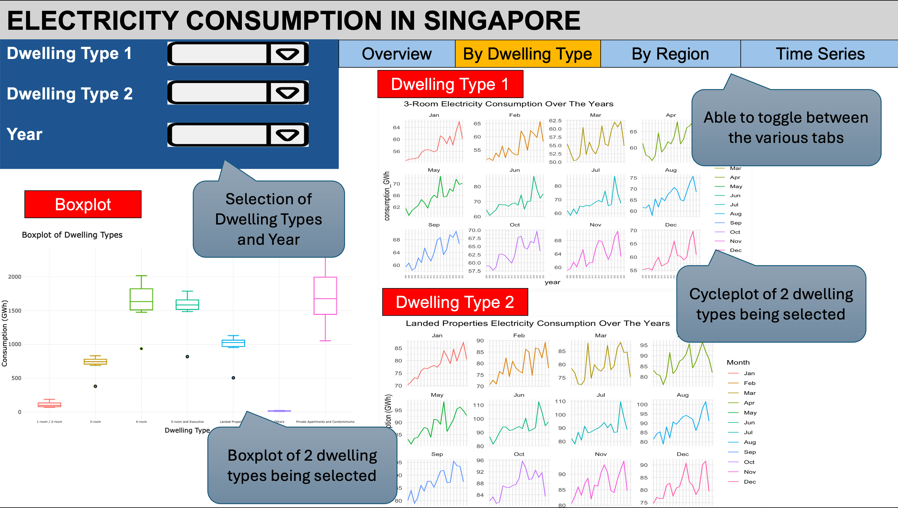
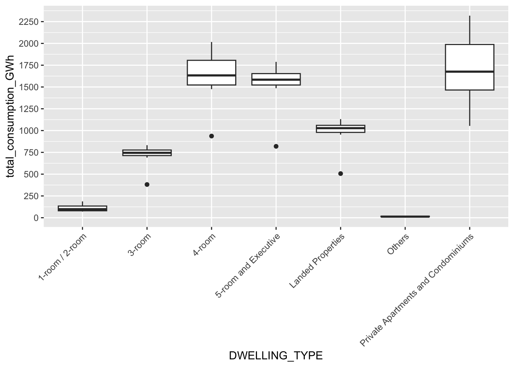
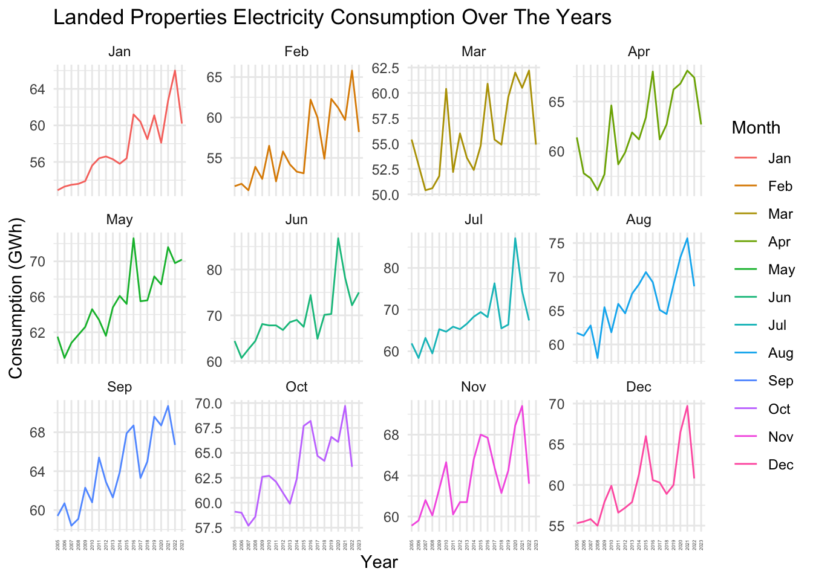

pacman::p_load(ggiraph, plotly,
patchwork, DT, tidyverse, dplyr, ggthemes, readxl, ggstatsplot) Take-home Exercise 4
EcoWatt Prototype
1. Overview
1.1 Setting the Scene for This Take Home Exercise
For this take-home assignment, weare tasked with choosing a module from our proposed Shiny application and accomplishing the tasks listed below:
- Assess and identify the required R packages for our Shiny application, ensuring they are available on CRAN,
- Develop and verify the specific R codes to ensure they execute properly and yield the anticipated results,
- Identify the parameters and outputs that will be made available through the Shiny application,
- Choose suitable Shiny UI components for displaying the parameters identified previously.
For this Take-home Exercise 4, we be asked to create a module report similar in content to one of the aforementioned prototype modules. However, there will be a few key differences:
- Your module report for Take-home Exercise 4 must be published on your own coursework page, serving as your submission for this assignment.
- You must include a section titled “UI Design,” detailing the different components of the user interface for your proposed design.
- For guidance on storyboarding the UI Design, please refer to the provided Storyboard link.
2. Getting Started
2.1 Loading Necessary R packages
We will utilise the following packages:
ggiraph for making ‘ggplot’ graphics interactive.
plotly, R library for plotting interactive statistical graphs.
DT provides an R interface to the JavaScript library DataTables that create interactive table on html page.
tidyverse, a family of modern R packages specially designed to support data science, analysis and communication task including creating static statistical graphs.
patchwork for combining multiple ggplot2 graphs into one figure.
ggthemes is an R package that offers additional themes, geoms, and scales for ‘ggplot2’
The code which loads the R packages:
2.2 Import dataset
Of course our next step involves importing the dataset. Our project revolves around electricity consumption in Singapore. This data can be retrieved from EMA and this excel file contains many sheets.
IMPORTANT
2023 values will always appear lower as the datasest contains only 6 months worth of data.
I will be using the tidy dataset and will be importing sheet T3.4.
The following code snippet will outline the sequential steps we will undertake:
house_ec <- read_excel("data/SES_Public_2023_tidy.xlsx", sheet = "T3.4")3. EDA
3.1 EDA: Household Electricity Consumption Trend from 2005 - 2023
In exploring the nuances of domestic energy consumption over nearly two decades, this section delves into the discernible trends and underlying factors influencing household electricity usage from 2005 to 2023. By filtering the dataset to include annual figures across all dwelling types, a line plot is crafted, providing a clear visual representation of the changes over time. Observations drawn from the data not only reveal the overall trajectory of consumption but also pinpoint specific periods of significant increase or decrease. Notably, the introduction of the National Environment Agency’s Energy-Saving Challenge appears to correlate with a marked reduction in usage, highlighting the potential effectiveness of targeted environmental initiatives. This analysis serves as a stepping stone towards understanding the broader implications of energy policies and consumer behaviors on electricity demand.
Therefore, we want to find out the household electricity consumption trend across the years.
Some of the columns have already included the aggregated data. Therefore, we will filter those out to only include the raw data. This means not to include Overall, Public Housing, Private Housing under the column DWELLING_TYPE or to not include Annual under the column month.

df <- house_ec %>%
filter(!(DWELLING_TYPE %in% c("Overall", "Public Housing", "Private Housing") | month == "Annual"))Month is observed as character string format. This line of code will convert the month column from character type to numeric type, allowing us to perform numerical operations on it.
df$month <- as.numeric(df$month)Then, we would want to find the yearly household electricity consumption.
sum_consumption_by_year <- df %>%
group_by(year) %>%
summarize(total_consumption_GWh = sum(consumption_GWh, na.rm = TRUE)) %>%
ungroup()We will then construct a line plot so we could clearly observe a trend in the household electricity consumption across the years.
Show the code
p <- ggplot(data=sum_consumption_by_year,
aes(x = year,
y = total_consumption_GWh)) +
geom_point(size=1) +
geom_line() +
coord_cartesian(xlim=c(2005,2023),
ylim=c(0,9000)) +
labs(x = "Year", y = "Total Consumption (GWh)", title = "Annual Household Electiricty Consumption from 2005 to 2023")
ggplotly(p)
Observations
Overall Trend: There appears to be a general increase in household electricity consumption from 2005 until about 2021, where consumption levels drop off slightly in 2022.
Peak Consumption: The peak in consumption is around 2020 or 2021, after which there’s a slight decrease.
Decerement: Observing a modest decline in energy consumption during 2017 and 2018, it’s plausible to attribute this shift to the impactful initiatives by the National Environment Agency (NEA), particularly through its Energy-Saving Challenge. This campaign, which spanned the said years, successfully encouraged households to adopt more sustainable energy practices. The 2018 edition of the Energy-Saving Challenge specifically rallied households to cut down on their electricity usage by implementing three straightforward but effective measures: turning off appliances when not in use, maintaining air-conditioner temperatures at 25°C or above, and opting for more energy-efficient appliances, evident through higher tick ratings. Such measures not only promoted environmental stewardship but also offered financial incentives, with reductions in electricity bills by at least one percent making participants eligible for a variety of attractive prizes.
3.2 EDA: Public vs Private Housing
Continuing our examination of electricity consumption patterns in Singapore, we turn our focus to comparing the trends between public and private housing sectors from 2005 to 2023. This segment of the analysis categorizes residential units into public housing—ranging from 1-room/2-room to 5-room and executive apartments—and private housing, encompassing both private apartments/condominiums and landed properties. By refining the data to reflect these two broad categories of dwelling types, a clearer picture emerges of the electricity usage disparities and trends within diverse living environments. This approach not only sheds light on the consumption behaviour across different housing types but also provides insights into the efficiency and sustainability practices within Singapore’s residential landscape. Through this comparison, stakeholders may better understand sector-specific demands and craft targeted policies to promote energy conservation.
With this in mind, we want to find out the household electricity consumption of public and private housing in Singapore across the years.
Public Housing includes:
1-room/2-room
3-room
4-room
5-room and Executive
Private Housing includes:
Private Apartments and Condominiums
Landed Properties
Others
We will filter the data accordingly as shown in the code snippet below. We will firstly group the respective dwelling types mentioned above to Public and Private Housing. Afterwards, we will then find out the yearly household electricity consumption for both Public and Private Housing.
# This will give us a data frame with the sum of consumption_GWh for each dwelling category by year
sum_public_private_by_year <- df %>%
mutate(Dwelling_Category = case_when(
DWELLING_TYPE %in% c("1-room / 2-room", "3-room", "4-room", "5-room and Executive") ~ "Public Housing",
DWELLING_TYPE %in% c("Private Apartments and Condominiums", "Landed Properties", "Others") ~ "Private Housing",
TRUE ~ NA_character_ # This handles any types not specified
)) %>%
group_by(year, Dwelling_Category) %>%
summarize(total_consumption_GWh = sum(consumption_GWh, na.rm = TRUE)) %>%
ungroup() # Optionally, ungroup if we plan further manipulations that don't need the groupingShow the code
p <- ggplot(data=sum_public_private_by_year,
aes(x = year,
y = total_consumption_GWh, colour = Dwelling_Category)) +
geom_point(size=1) +
geom_line() +
coord_cartesian(xlim=c(2005,2023),
ylim=c(0,9000)) +
labs(x = "Year", y = "Total Consumption (GWh)", title = "Public vs Private Housing: Annual Household Electiricty Consumption from 2005 to 2023")
ggplotly(p)
Observations
Consumption Levels: Public housing consistently shows higher electricity consumption than private housing throughout the given period.
Public Housing Trend: Electricity consumption in public housing generally increases from 2005, peaks around 2020-2021, and then shows a slight decrease in the year following.
Private Housing Trend: Private housing shows a more steady and gradual increase in electricity consumption over the years with less fluctuation than public housing. However, there is still a slight decrease after the peak around 2020-2021.
3.3 EDA: Different Dwelling Types
The exploration of household electricity consumption in Singapore takes a finer lens in this section, focusing on the disparate trends across various dwelling types. Data is meticulously segregated for individual categories such as 1-room/2-room units, 3-room, 4-room, 5-room and Executive apartments, landed properties, and private apartments and condominiums. The narrative crafted from the analysis of these figures from 2005 to 2023 unveils the distinct consumption patterns inherent to each dwelling type. Through detailed visualisations, we discern the ebbs and flows of energy use, which may be attributable to factors like evolving efficiency standards, economic shifts, behavioural changes, and technological advancements. This comprehensive view underscores the multifaceted nature of energy consumption and the influence of dwelling size and type on the ecological footprint of residential sectors.
We will now look into detail on the household electricity consumption from all dwelling types in Singapore across the years.
We will filter the data accordingly as shown in the code snippet below. We will find out the yearly household electricity consumption for each of the dwelling type.
sum_dwelling_type_by_year <- df %>%
group_by(year, DWELLING_TYPE) %>%
summarize(total_consumption_GWh = sum(consumption_GWh, na.rm = TRUE)) %>%
ungroup() # Removes the groupingShow the code
p <- ggplot(data=sum_dwelling_type_by_year,
aes(x = year,
y = total_consumption_GWh, colour = DWELLING_TYPE)) +
geom_point(size=1) +
geom_line() +
coord_cartesian(xlim=c(2005,2023),
ylim=c(60,2500)) +
labs(x = "Year", y = "Total Consumption (GWh)", title = "Dwelling Types: Annual Household Electiricty Consumption from 2005 to 2023")
ggplotly(p)
Observations
1-room/2-room (Red line): This category has the lowest consumption overall, with a relatively flat trend throughout the years. There’s a slight increase around 2015 but remains quite stable with minimal fluctuation.
3-room (Yellow line): Starts off slightly higher than the 1-room/2-room category, shows a gradual increase until around 2017, and then enters a plateau with a slight decline towards 2022.
4-room (Green line): Displays a steady increase in consumption until about 2021, then it slightly declines. This category has a notably higher consumption than the 1-room/2-room and 3-room dwellings.
5-room and Executive (Cyan line): Similar to the 4-room trend but with an even higher consumption level. It shows a steady increase, peaking around 2021, followed by a slight decline.
Landed Properties (Light Blue line): This dwelling type shows a significant increase in consumption over the years, peaking around 2020, then decreasing. The consumption levels are significantly higher than those of HDB apartments (1-5 room and executive).
Private Apartments and Condominiums (Pink line): Starts higher than the other categories except for landed properties, increases steadily until around 2021, and then shows a decline.
The general trend for most dwelling types indicates a steady increase in electricity consumption up to around 2021, after which there’s a general decline or plateau. This could be due to several reasons:
- Improved energy efficiency: Over the years, appliances and building standards have become more energy-efficient, which might contribute to the plateau or decrease in consumption after peaking.
- Economic factors: Changes in the economy can affect household spending on electricity.
- Behaviour changes: There may have been shifts in consumer behavior, such as increased awareness of energy conservation or changes in lifestyle that reduce electricity consumption.
- Technological advancements: The adoption of smart home technology can lead to more efficient energy use, contributing to the declining trend.
Lastly, the type of dwelling is a significant factor, with larger or more luxurious dwellings (such as landed properties and private apartments/condominiums) consuming more electricity than smaller dwellings (like 1-room to 4-room HDB apartments). This reflects the generally larger space to be cooled or heated, more appliances in use, and potentially a larger number of occupants.
4. Prototype & UI Design
The image below shows a sketch of the prototype.

The project’s goal is to examine household consumption patterns by dwelling types, with a focus on seasonal variations. Here’s a more detailed breakdown of the plan based on the provided annotations:
Objective: The primary aim is to look in detail at electricity household consumption, comparing different types of dwellings. The focus is on understanding how consumption patterns vary with seasons, implying that weather or seasonal activities might significantly influence electricity consumption levels.
Selection of Dwelling Types: The analysis starts by selecting two types of dwellings. These could be any classifications of homes such as 1-room/2-room vs Landed Properties. The purpose of selecting two is to perform a comparative analysis.
Boxplot of Electricity Consumption: On the bottom left, there’s a “boxplot of the consumption between 2 dwelling types”. A boxplot is a standardised way of displaying the distribution of data based on a five-number summary: minimum, first quartile (Q1), median, third quartile (Q3), and maximum. It can reveal outliers, the spread, and skewness of the data and compare the two dwelling types.
- The ‘whiskers’ of the boxplot typically represent the range of the data excluding outliers, which are plotted as individual points outside the whiskers.
- The ‘box’ itself contains the middle 50% of the data, showing the interquartile range (IQR).
- The line in the middle of the box represents the median of the data.
Cycle Plot of Electricity Consumption: On the right side, there’s a “cycle plot of the consumption between 2 types”. Cycle plots are used to show seasonality and trends over time. They can be particularly useful for spotting patterns that repeat over a known cycle, in this case, monthly across multiple years.
- The x-axis typically represents time, which is why “year” is noted, while the y-axis represents the consumption levels.
- Each line in the cycle plot likely represents a different dwelling type, and their shape shows monthly consumption trends. It seems to suggest a seasonal pattern in consumption, which could vary by dwelling type.
Pre- and Post-COVID Analysis: The data can be separated by years before and after the COVID-19 pandemic. This suggests an interest in understanding how household consumption patterns might have shifted due to the lifestyle changes brought on by the pandemic. For instance, people might have started working from home, affecting energy consumption in residential areas.
In summary, this sketch outlines a comprehensive analysis plan to compare household electricity consumption across different dwelling types, examining both the overall distribution and the monthly seasonal trends, with the potential to further distinguish changes in consumption patterns that may have arisen before and after the COVID-19 pandemic. This kind of analysis could be very useful for utility companies, urban planners, environmental analysts, and policy-makers interested in understanding and managing household consumption.
Shiny Layout Panel & UI Components

We will be mainly using the sidebar and main panel.
The following code shows the basic structure:
ui <- fluidPage(
titlePanel("Household Electricity Consumption by Dwelling Types"),
sidebarLayout(
sidebarPanel(
selectInput("DWELLING_TYPE", "Choose Dwelling Type", dwelling_type.name)
),
mainPanel(
plotOutput("hist")
)
)
)The side panel should include:
Dwelling Type 1: Have a dropdown box so user can select which dwelling type (selectInput)
Dwelling Type 2: Have a dropdown box so user can select which dwelling type (selectInput)
Year: Have a dropdown box so user can select which year (selectInput)
5. Visual Statistical Analysis
5.1 Oneway ANOVA Test: ggbetweenstats()
The DWELLING_TYPE column contains the following unique dwelling types: ‘1-room / 2-room’, ‘3-room’, ‘4-room’, ‘5-room and Executive’, ‘Private Apartments and Condominiums’, ‘Landed Properties’, and ‘Others’. We’ll use ggbetweenstats() from the ggstatsplot package in R to perform and visualise a One-way ANOVA test comparing electricity consumption across these dwelling types. With that in mind, One-way ANOVA test is carried out to determine if there are statistically significant differences in electricity consumption among different dwelling types (e.g., 1-room, 2-room, 3-room, etc.).
The One-way ANOVA is suitable when we have one categorical independent variable (dwelling type) with more than two levels (different types of housing), and one continuous dependent variable (electricity consumption in GWh).
ggbetweenstats(
data = df,
x = DWELLING_TYPE, # grouping variable
y = consumption_GWh, # dependent variable
title = "Electricity Consumption by Dwelling Type",
xlab = "Dwelling Type",
ylab = "Electricity Consumption (GWh)",
type = "p", # for parametric assumptions
pairwise.comparisons = TRUE, # perform post-hoc analysis
pairwise.display = "significant", # display significant comparisons
p.adjust.method = "fdr", # p-values are first sorted and ranked.
messages = FALSE # hide messages
)
Looking at the provided plot, which is the output of a One-way ANOVA analysis, here are the key conclusions:
Significant Differences: The ANOVA test result, as indicated by the
Fstatistic and thepvalue (F(6, 594.16) = 15652.20, p = 0.00), suggests that there are statistically significant differences in electricity consumption among the different dwelling types.Effect Size: The omega squared (
ω²) value is very close to 1 (ω² = 0.99), which suggests a very strong effect size. This indicates that the variation in electricity consumption is highly associated with the dwelling type.Mean Consumption: The plot displays the mean electricity consumption (GWh) for each dwelling type, with ‘Private Apartments and Condominiums’ having the highest mean consumption (
μmean = 149.02GWh) and ‘Others’ having the lowest (μmean = 1.25GWh).Policy and Decision Making: Given the significant differences in consumption across dwelling types, policymakers can identify which types of residences might need targeted energy efficiency initiatives. For example, ‘Private Apartments and Condominiums’ and ‘Landed Properties’ show the highest mean consumption and might be key areas for energy-saving programmes.
Understanding Consumption Patterns: The means displayed on the plot (
μmean) reveal the pattern of consumption across dwelling types. Smaller dwellings like ‘1-room / 2-room’ have much lower consumption compared to larger or more luxurious dwellings such as ‘Private Apartments and Condominiums’ and ‘Landed Properties’.Possibility of Further Research: The significant differences invite further research into why these differences occur, such as investigating the influence of socio-economic factors, the age of the buildings, insulation quality, or the presence of energy-efficient appliances.
Pairwise Comparisons: The lines connecting different dwelling types represent pairwise comparisons, with the corresponding adjusted p-values for the comparisons indicated. Adjustments have likely been made for multiple comparisons, possibly using the Holm method (as indicated by
pHolm-adj).- All the pairwise comparisons shown on the plot are significant (indicated by p-values less than 0.05), except for one comparison (‘3-room’ vs. ‘4-room’,
pHolm-adj = 0.03), which is right at the cusp of typical significance levels.
- All the pairwise comparisons shown on the plot are significant (indicated by p-values less than 0.05), except for one comparison (‘3-room’ vs. ‘4-room’,
Visualisation Clarity: I am aware that overlapping labels make it difficult to read specific values for each pairwise comparison. However, given that all visible p-values are below typical alpha levels (e.g., 0.05, 0.01, 0.001), we can conclude that most dwelling type comparisons differ significantly in terms of electricity consumption.
The plot effectively shows that dwelling type is a significant factor in electricity consumption, with clear variability between different types of dwellings. As mentioned above, the next steps in analysis might involve investigating the reasons behind this variability, such as the size of the dwellings, the number of occupants, or the types of electrical appliances and systems in use.
5.2 Significant Test of Correlation: ggscatterstats()
Correlation analysis is a statistical method used to evaluate the strength and direction of the linear relationship between two continuous variables. In the context of the our dataset, we can track electricity consumption over time for various dwelling types. The objectives of carrying out correlation analysis could be:
Identifying Relationships: To determine whether there is a statistically significant linear relationship between time (months or years) and electricity consumption. This could help identify trends, such as increasing or decreasing electricity usage over the years or months.
Understanding Seasonality: To understand if there is a seasonal pattern in electricity consumption. For instance, electricity consumption may decrease due to rainy season.
Forecasting: By establishing the presence of a linear trend, correlation analysis could be a preliminary step before developing forecasting models to predict future consumption based on past trends.
Policy Development: If significant correlations are found, it could inform energy policy decisions, such as the need for energy conservation measures during certain times of the year or in certain types of dwellings.
The objective of correlation analysis is not to infer causation but rather to measure the strength of association between two variables. It’s a starting point that might lead to more detailed analysis, such as regression, to control for other variables and potentially infer causal relationships.
5.2.1 Correlation between Year and Electricity Consumption
# For correlation with year
ggscatterstats(
data = sum_consumption_by_year,
x = year,
y = total_consumption_GWh,
title = "Correlation between Year and Electricity Consumption",
xlab = "Year",
ylab = "Electricity Consumption (GWh)",
marginal = FALSE,
)
From the output above, the key points would be:
Correlation Coefficient: The Pearson correlation coefficient (r)
r̂_Pearsonis 0.34, indicating a modest positive relationship between the year and electricity consumption. However, the confidence interval is wide and includes zero, indicating that the relationship is not statistically significant at the typical alpha levels (e.g., 0.05).P-value: The p-value is 0.16, which is above 0.05, suggesting that the positive correlation observed is not statistically significant. In other words, there isn’t enough evidence to claim that the year is significantly correlated with electricity consumption.
Bayes Factor: The Bayes Factor is close to 0
(log_e(BF_01)= 0.17), suggesting that there is not strong evidence against the null hypothesis. The data does not provide strong evidence for a correlation between year and electricity consumption.Regression Line and Confidence Band: The plot shows a regression line with a positive slope, indicating an increase in electricity consumption over time, but the confidence band is quite wide, reflecting the uncertainty of this trend.
In conclusion, while there is a positive trend indicated by the correlation coefficient and the slope of the regression line, this analysis does not provide strong statistical evidence to confirm a significant relationship between year and electricity consumption based on the data provided. It suggests that if there is a trend, it is relatively weak, and other factors might better explain changes in electricity consumption over time. This analysis could serve as a starting point for more in-depth time series analysis that could account for other variables and use methods that are appropriate for time-dependent data.
5.2.2 Correlation between Month and Electricity Consumption
We would like to filter the total electricity consumption by month:
sum_consumption_by_month <- df %>%
group_by(month) %>%
summarize(total_consumption_GWh = sum(consumption_GWh, na.rm = TRUE)) %>%
ungroup()# For correlation with month
ggscatterstats(
data = sum_consumption_by_month,
x = month,
y = total_consumption_GWh,
title = "Correlation between Month and Electricity Consumption",
xlab = "Month",
ylab = "Electricity Consumption (GWh)",
marginal = FALSE,
)
In the provided plot above, we observe a correlation analysis between ‘Month’ and ‘Electricity Consumption’. The key points from this plot are as follows:
Correlation Coefficient (r): The Pearson correlation coefficient, denoted as
r̂_Pearson, is 0.12, which suggests a very weak positive linear relationship between month and electricity consumption.Confidence Interval: The 95% confidence interval for the Pearson correlation coefficient ranges from -0.49 to 0.65, which is quite wide and includes zero. This indicates that the true correlation could be negative, zero, or positive, and we can’t say for sure that there is a meaningful relationship between the variables.
P-value: The p-value of 0.72 is well above the conventional alpha levels (0.05, 0.01), which suggests that the observed correlation is not statistically significant. In other words, any correlation observed could very well be due to random chance.
Bayes Factor: The logarithm of the Bayes Factor
(log_e(BF01))is 0.81, which suggests that the data are 0.81 times as probable under the null hypothesis as they are under the alternative. This indicates that there’s insufficient evidence to suggest a correlation exists from a Bayesian perspective.Sample Size: There were n_pairs = 12 pairs of data points used in this analysis. This is a relatively small sample size, which can limit the reliability of the correlation coefficient.
Plot Interpretation: The scatter plot with a fitted line (blue) and a confidence band (grey area) does not show a clear increasing or decreasing trend, further supporting the conclusion that there’s no significant linear relationship between month and electricity consumption.
In summary, based on the output, there is no strong evidence to conclude that there is a significant linear relationship between the month of the year and electricity consumption, given the data presented. The weak correlation and high p-value suggest that any observed trend may be due to random variation rather than a consistent pattern. However, it is important to remember that correlation does not imply causation, and this type of analysis cannot determine whether changes in the month cause changes in electricity consumption.
6. Storyboard
Here we will be showing you the overall storyboard design that we aim to replicate in R Shiny App.


6.1 Boxplot
p <- ggplot(sum_dwelling_type_by_year, aes(DWELLING_TYPE, total_consumption_GWh, color = DWELLING_TYPE)) +
theme_minimal() +
labs(x = "Dwelling Type", y = "Consumption (GWh)", title = "Boxplot of Dwelling Types") +
theme(axis.text.x = element_text(size=5)) + # change x-labels size
guides(color = FALSE) # removes legend at the side
p <- p + geom_boxplot()
ggplotly(p)ggplot(sum_dwelling_type_by_year, aes(DWELLING_TYPE, total_consumption_GWh)) + geom_boxplot() + theme(axis.text.x = element_text(angle = 45, hjust = 1)) +
scale_y_continuous(breaks = seq(0, max(sum_dwelling_type_by_year$total_consumption_GWh), by = 250))
6.2 Cycle Plot
We will filter the data accordingly as shown in the code snippet below:
# Ensure the data types are as expected
df$month <- factor(df$month, levels = 1:12, labels = c("Jan", "Feb", "Mar", "Apr", "May", "Jun", "Jul", "Aug", "Sep", "Oct", "Nov", "Dec"))
df$year <- as.factor(df$year)
df$consumption_GWh <- as.numeric(df$consumption_GWh)
df$DWELLING_TYPE <- as.factor(df$DWELLING_TYPE)
# Filter the data frame for only '3-room' dwelling type
df_filtered <- df[df$DWELLING_TYPE == "3-room", ]
# Create a cycle plot for '3-room' dwelling type
ggplot(df_filtered, aes(x = year, y = consumption_GWh, group = month, color = month)) +
geom_line() +
# geom_point is optional: add points to the lines
theme_minimal() +
labs(x = "Year", y = "Consumption (GWh)", title = "Landed Properties Electricity Consumption Over The Years", color = 'Month') +
facet_wrap(~month, scales = 'free_y') + # this creates a separate line plot for each month
theme(axis.text.x = element_text(angle = 90, hjust = 1, vjust = 0.5, size = 3)) # Rotate x-axis labels by 90 degrees